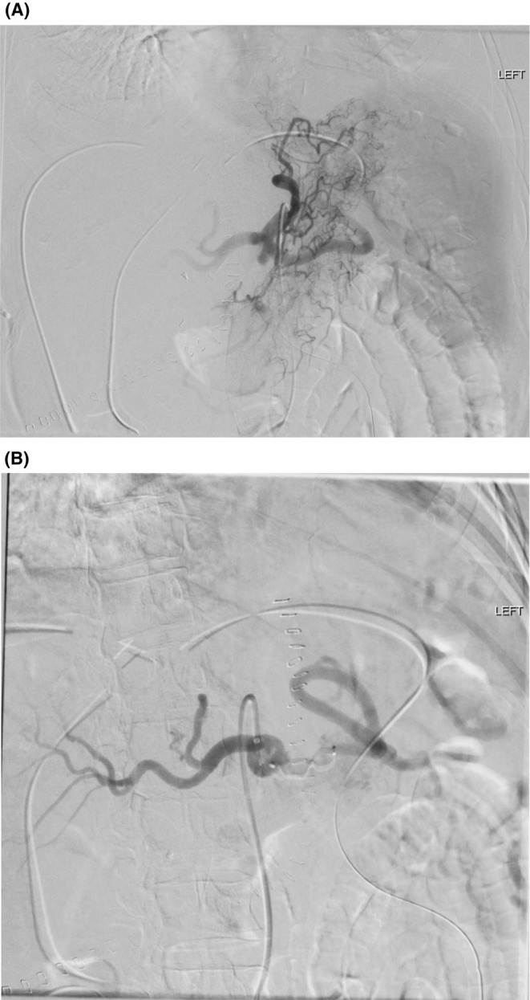
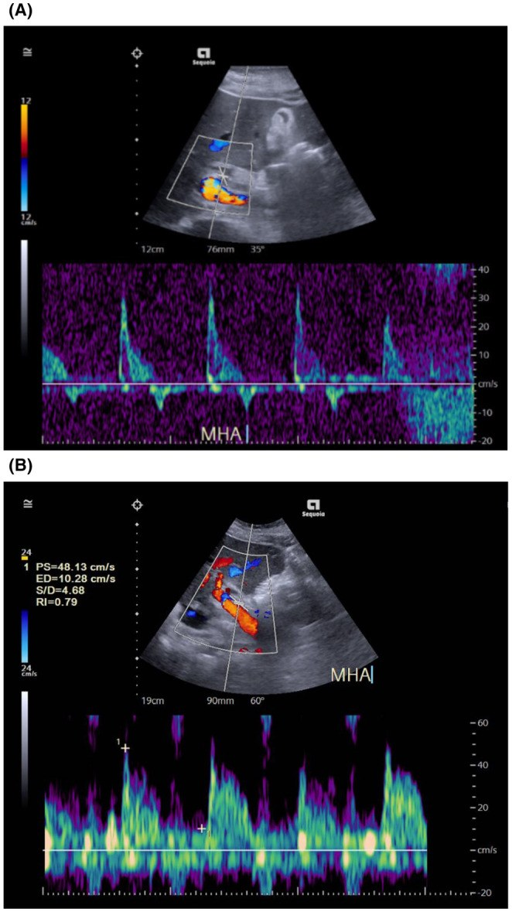

1947 — Co thắt động mạch gan & hội chứng cướp máu lách sau ghép gan: hai nguyên nhân "mất dòng" không phải huyết khối / Hepatic artery vasospasm and splenic artery steal syndrome after liver transplantation
Tags: pattern:mat-song-toc-do pattern:gia-tac-mach pattern:tardus-parvus pattern:dao-dong-tam-truong vung:dong-mach-gan vung:lach vung:gan score:RI protocol:Doppler protocol:CTA-bung protocol:DSA
Mức chắc chắn (certainty): tổng hợp y văn (literature synthesis) — ghép 1 ca co thắt được mổ lại vì tưởng huyết khối (Clin Transplant Res 2024, PMC11075816, CC BY-NC), 1 loạt 3 ca cướp máu lách có DSA + Doppler trước/sau nút mạch (Clin Case Rep 2024, PMC11091234, CC BY-NC), 1 loạt 75 ca nút động mạch lách so vị trí nút (PLoS One 2022, PMC8912229, CC BY) và 1 loạt 48 thủ thuật hẹp động mạch gan so can thiệp trực tiếp với nút mạch tạng (CVIR Endovasc 2024, PMC11032299, CC BY). Không có thử nghiệm ngẫu nhiên; tỷ lệ co thắt chưa được xác định trong y văn.
Câu chốt: sau ghép gan, "không thấy phổ động mạch gan" không đồng nghĩa huyết khối. Có ba nguyên nhân, và xử trí ngược nhau: huyết khối (HAT) cần tái thông/mổ lại trong vài giờ; co thắt là rối loạn chức năng, tự hồi phục — mổ lại chỉ để xác nhận và bơm thuốc giãn mạch; cướp máu lách (SASS) là dòng máu bị "hút" sang lách, điều trị bằng nút động mạch lách chứ không phải nong động mạch gan. Ba bệnh cảnh này khác nhau ở chỉ một vài số đo Doppler và chỉ DSA mới phân định được — nên điều trị theo hình ảnh mà không có DSA/CTA là điều trị mù.
1. Tổng quan bệnh học – cơ chế hình ảnh (TẠI SAO)
1.1 Ba cơ chế của cùng một triệu chứng "mất dòng"
- Huyết khối (hepatic artery thrombosis, HAT): là biến cố cấu trúc, chiếm 2,9% ở người lớn và 8,3% ở trẻ sau ghép gan, là nguyên nhân mất ghép đứng thứ hai sau chức năng ghép kém nguyên phát (PMC11075816). Xử trí: tái thông nội mạch hoặc mổ lại — đã có bài 1913.
- Co thắt (vasospasm): là biến cố chức năng của lớp áo giữa. Sau kẹp mạch – tái tưới máu, hạ huyết áp, hạ thân nhiệt, catecholamin tăng, thiếu máu lạnh kéo dài, lớp cơ trơn của động mạch gan ghép co lại. Theo định luật Poiseuille, lưu lượng tỷ lệ với bán kính lũy thừa 4: giảm bán kính 20% làm lưu lượng giảm ≈ 2,4 lần, giảm 50% làm lưu lượng giảm 16 lần. Vì vậy co thắt không cần hẹp lòng thật cũng đủ làm mất phổ hoàn toàn trên Doppler — đúng ca PMC11075816: động mạch thông hoàn toàn nhưng không có dòng trong các nhánh trong gan.
- Cướp máu lách (splenic artery steal syndrome, SASS): không có tổn thương động mạch gan. Lách to → giường mạch lách có sức cản thấp, lưu lượng rất cao → khi dòng qua thân tạng (celiac trunk) bị "chia", phần lớn chảy vào động mạch lách, phần động mạch gan tụt áp và mất dòng tâm trương (thậm chí đảo dòng). Tỷ lệ SASS sau ghép gan được báo cáo 3–6% (PMC8912229).
1.2 TẠI SAO Doppler cho ba bức tranh khác nhau
- Vật lý của chỉ số sức cản (resistive index, RI):
RI = (PSV − EDV) / PSV. Hẹp miệng nối làm giảm áp lực hạ lưu → RI thấp (< 0,5)**, **PSV cao tại chỗ hẹp (> 200 cm/s), và phổ tardus–parvus (tăng tốc chậm, đỉnh tù) ở động mạch gan trong gan. Cướp máu lách thì ngược lại: động mạch gan nhận ít máu, dòng tâm trương mất hoặc đảo, nên RI cao (> 0,8) — đây là điểm phân biệt cốt lõi với hẹp. - Vì sao số đo RI lại phân loại được bệnh nhân: trong loạt 48 thủ thuật của PMC11032299, RI trước can thiệp ở nhóm hẹp thật là 0,53 (IQR 0,44–0,59) — được nong/stent động mạch gan; còn nhóm được nút mạch tạng (chủ yếu động mạch lách) có RI 0,64 (IQR 0,52–0,70), khác biệt p = 0,008. Nói cách khác: RI càng thấp càng nghĩ hẹp thật; RI còn cao kèm đảo dòng tâm trương càng nghĩ cướp máu lách.
- Vì sao co thắt "giả huyết khối": co thắt lan tỏa, dài đoạn, không có mảng xơ vữa, không có huyết khối trong lòng. Trên DSA, sau bơm thuốc giãn mạch (papaverine, verapamil, nitroglycerin) lòng mạch mở lại — đó là tiêu chuẩn vàng tại chỗ. Ca PMC11075816: Doppler ngày 1 hậu phẫu mất dòng nhánh trong gan → mở lại thấy động mạch ghép co thắt → bơm papaverine + urokinase trong mạch và nicorandil tĩnh mạch → dòng hồi phục, ra viện ngày 23 với men gan bình thường.
- Vì sao cần DSA chứ không chỉ CTA: DSA vừa chẩn đoán vừa điều trị (bơm thuốc giãn mạch, nong bóng, stent, nút lách) và cho thử nghiệm chức năng mà CTA không làm được. CTA hữu ích để loại trừ tắc hoàn toàn, giả phình, hẹp miệng nối và để đo đường kính động mạch lách/gan trước thủ thuật.
1.3 Ngưỡng định lượng nằm lòng
| Đại lượng | Số liệu | Nguồn |
|---|---|---|
| Tỷ lệ SASS sau ghép gan | 3–6% | PMC8912229 |
| Tỷ lệ HAT sau ghép gan | 2,9% người lớn · 8,3% trẻ | PMC11075816 |
| Tỷ lệ co thắt động mạch gan sau ghép | chưa rõ — y văn không có mẫu số | PMC11075816 |
| Thể tích lách gợi ý SASS | > 830 cm³, độ chính xác ≈ 75% | PMC11091234 (dẫn y văn) |
| Đường kính động mạch lách gợi ý SASS | > 4,0 mm | PMC11091234 |
| Tỷ lệ đường kính động mạch lách/động mạch gan | > 1,5 | PMC11091234 |
| Chênh đường kính lách – gan | ≥ 6 mm dự báo SASS | PMC11091234 (dẫn y văn) |
| Doppler gợi ý SASS | RI > 0,8, mất/đảo dòng tâm trương | PMC11091234 |
| Tần suất ca SASS có mô tả bất thường Doppler | 30% (34/113) — Doppler không đủ để chẩn đoán | PMC11091234 |
| RI trước can thiệp: hẹp thật vs nút mạch tạng | 0,53 (0,44–0,59) vs 0,64 (0,52–0,70), p = 0,008 | PMC11032299 |
| Mức hẹp trên DSA: hẹp thật vs nút mạch tạng | 59% ± 9 vs 56% ± 12, p = 0,32 | PMC11032299 |
| Biến chứng thủ thuật: nong/stent vs nút mạch tạng | 29% (6/21) vs 4% (1/27), p = 0,015 | PMC11032299 |
| Tử vong liên quan gan 1 năm: nong/stent vs nút mạch tạng | 10% (2/21) vs 0% (0/27), p = 0,10 | PMC11032299 |
| ALT giảm sau 1 tháng: nong/stent vs nút mạch tạng | −72 U/L vs −112,5 U/L, p = 0,60 | PMC11032299 |
| Nút lách gần (proximal) vs xa: GPT ngày 3 | 57,0 vs 118,0 U/L (IQR 107,5 vs 254,0), p = 0,002 | PMC8912229 |
| Nút lách gần vs xa: GOT ngày 3 | 48,0 vs 81,0 U/L, p = 0,008 | PMC8912229 |
| Nút lách gần vs xa: tiểu cầu ngày 7 | 122 vs 83 ×10³, p = 0,014 | PMC8912229 |
| Ca co thắt: PSV/RI trong mổ | PSV 45 cm/s, RI 0,6 → ngày 1 mất dòng | PMC11075816 |
| Ca co thắt: thời gian nằm viện | ra viện ngày 23, men gan bình thường | PMC11075816 |

Hình 1 — DSA thân tạng. (A) Thuốc cản quang dồn gần như toàn bộ vào động mạch lách; động mạch gan chỉ còn một nhánh mờ. (B) Sau nút động mạch lách (thấy các vòng coil), động mạch gan và các nhánh trong gan hiện đầy đủ. Nguồn: Clin Case Rep 2024 (PMC11091234), CC BY-NC 4.0 — xem images/CREDITS.md.
2. Mẫu hình + chẩn đoán phân biệt theo vị trí (Gamut)
Mẫu hình chung: bệnh nhân sau ghép gan vài ngày đến vài tuần, men gan tăng, có khi sốt/hạ huyết áp, Doppler bất thường ở vùng rốn gan. Câu hỏi hình ảnh luôn là: dòng máu gan còn không, và nếu mất thì do cấu trúc hay do chức năng?
- Theo vị trí tổn thương trên DSA/CTA:
- Miệng nối động mạch gan → hẹp miệng nối, huyết khối, giả phình, bóc tách (bài 1861, 1913, 1915).
- Động mạch gan lan tỏa, dài đoạn → co thắt (thường sau kẹp mạch, hạ huyết áp, hoặc do catheter).
- Thân tạng và động mạch lách → cướp máu lách; lách to, động mạch lách giãn.
- Nhu mô gan → ổ nhồi máu, ứ mật, hoại tử đường mật do thiếu máu (biến chứng của cả ba).
- Gamut "mất phổ động mạch gan" sau ghép: HAT · hẹp miệng nối · co thắt · cướp máu lách · chèn ép/tắc do tụ máu hoặc kink · giảm cung lượng tim – hạ huyết áp · kỹ thuật đặt đầu dò sai (góc > 60°).
- Gamut "tăng men gan sau ghép": thải ghép cấp · nhiễm trùng/viêm đường mật · thiếu máu động mạch (ba nguyên nhân trên) · tắc tĩnh mạch cửa · độc tính thuốc · tái phát bệnh nền.
3. Bảng so sánh phân biệt (ma trận đối chiếu)
| Thực thể (entity) | Hình ảnh điển hình (Doppler / CTA / DSA) | Chốt vào (rule-in) | Chốt loại (rule-out) | Gợi ý xác nhận |
|---|---|---|---|---|
| Huyết khối động mạch gan (HAT, bài 1913) | Mất phổ cả trong và ngoài gan; CTA khuyết thuốc hoàn toàn; DSA cụt đầu | Không có phổ ở mọi điểm + CTA khuyết thuốc lòng mạch + men gan tăng nhanh | Còn phổ ở một đoạn, hoặc phổ hồi phục sau thuốc giãn mạch → không phải HAT | CTA 3 thì lát mỏng; DSA cấp cứu |
| Co thắt động mạch gan | Hẹp lan tỏa, dài đoạn, không mảng xơ vữa; phổ yếu/mất nhưng không có khuyết thuốc khu trú; mở lại sau papaverine/verapamil | DSA: hẹp dài + giãn ra sau thuốc giãn mạch | Hẹp khu trú tại miệng nối, không đổi sau thuốc → hẹp thật | DSA + thử thuốc giãn mạch trong cùng thì |
| Cướp máu lách (SASS) | RI > 0,8, mất/đảo dòng tâm trương; CTA: động mạch lách > 4 mm hoặc tỷ lệ > 1,5, lách > 830 cm³; DSA: thuốc dồn vào lách, gan mờ | Đảo dòng tâm trương + động mạch lách giãn + dòng gan tăng sau nút lách | RI < 0,5, PSV cao tại miệng nối → hẹp thật | DSA thân tạng; nút lách là phép thử chẩn đoán |
| Hẹp miệng nối (bài 1861, 1915) | PSV > 200 cm/s tại chỗ hẹp, RI < 0,5**, **SAT > 80 ms, tardus–parvus hạ lưu | Hẹp khu trú + chênh áp qua chỗ hẹp + tardus–parvus | RI > 0,8 + đảo dòng tâm trương → nghĩ cướp máu lách | CTA; đo chênh áp khi nong bóng |
| Giả phình/Bóc tách động mạch gan | Túi thuốc ngoài lòng mạch, giữ hình thì muộn; bóc tách: giả lòng | Túi thuốc giữ hình thì muộn | Không có túi, không giả lòng | CTA 3 thì; DSA |
| Tụ máu/chèn ép ngoài mạch | Khối máu tụ quanh rốn gan đè xẹp động mạch, không có tổn thương nội mạc | Khối đè + mạch xẹp nhưng thành mạch nguyên | Huyết khối trong lòng/thành mạch → HAT/bóc tách | CTA; siêu âm có thuốc cản quang (CEUS) |
| Giảm cung lượng/hạ huyết áp | Phổ yếu toàn bộ cả động mạch lách và gan, RI bình thường hoặc cao, hồi phục khi bù dịch/vận mạch | Phổ yếu đồng thời nhiều tạng + huyết áp thấp | Bất thường khu trú một động mạch → tổn thương thật | Theo dõi sau bù thể tích; Doppler lặp |
4. Protocol chụp + ngưỡng xử trí
Doppler là tuyến đầu, làm hằng ngày trong tuần đầu sau ghép gan (PMC11091234). Đo PSV, EDV, RI, thời gian tăng tốc (SAT) tại vùng rốn gan và trong gan, ghi góc dò ≤ 60°, và luôn so với lần đo trước — vì cả ba bệnh cảnh đều thay đổi theo giờ.
- CTA bụng 3 thì (lát ≤ 1 mm) khi Doppler bất thường: xác định tắc, hẹp khu trú, giả phình, bóc tách, và đo đường kính động mạch lách/gan.
- DSA thân tạng khi CTA không phân định hoặc khi có khả năng can thiệp: bơm thuốc giãn mạch (papaverine 30–60 mg hoặc verapamil/nitroglycerin) để phân biệt co thắt với hẹp thật; nong bóng/stent nếu hẹp thật; nút động mạch lách nếu SASS.
- Nút động mạch lách: coil, Amplatzer plug hoặc hạt PVA 500–700 µm; kỹ thuật gần hay xa đều hiệu quả, nút gần có xu hướng bình thường hóa men gan sớm hơn (PMC8912229). Loạt 75 ca: 100% thủ thuật thành công về kỹ thuật, dòng động mạch gan cải thiện ngay.
- Sau nút lách: theo dõi men gan 1–3–7 ngày và 1 tháng, công thức máu (tiểu cầu), đau lách/nhiễm trùng lách; Doppler lặp để xác nhận RI giảm và dòng tâm trương trở lại.
flowchart TD
A["Sau ghép gan: men gan tăng + Doppler bất thường"] --> B{"Còn phổ trong lòng mạch?"}
B -->|"Không"| C["CTA hoặc DSA cấp cứu"]
C -->|"Cụt đầu, khuyết thuốc"| D["HAT - tái thông hoặc mổ lại"]
C -->|"Hẹp dài, mở lại sau thuốc giãn mạch"| E["Co thắt - thuốc giãn mạch, theo dõi"]
B -->|"Có"| F{"RI và dòng tâm trương"}
F -->|"RI > 0,8 + mất/đảo dòng tâm trương"| G["Nghi cướp máu lách"]
F -->|"RI < 0,5 + tardus-parvus"| H["Nghi hẹp miệng nối"]
G --> I["Đo động mạch lách > 4 mm hoặc tỷ lệ > 1,5"]
I --> J["Nút động mạch lách"]
H --> K["Nong bóng hoặc stent"]
Bảng ngưỡng hành động (tóm tắt):
| Tình huống | Ngưỡng | Hành động |
|---|---|---|
| RI động mạch gan | < 0,5 | Nghĩ hẹp/tardus–parvus → CTA/DSA |
| RI động mạch gan | > 0,8 kèm mất/đảo dòng tâm trương | Nghĩ cướp máu lách → đo động mạch lách, cân nhắc nút |
| Đường kính động mạch lách | > 4,0 mm hoặc > 1,5 × động mạch gan | Ủng hộ SASS |
| Thể tích lách | > 830 cm³ | Ủng hộ SASS (độ chính xác ≈ 75%) |
| DSA sau thuốc giãn mạch | Lòng mạch mở rõ rệt | Co thắt, không đặt stent |
| Men gan sau nút lách | Giảm trong 1–7 ngày | Xác nhận chẩn đoán SASS |
5. Biến thể bình thường và cạm bẫy
- RI cao trong 1–3 ngày đầu sau ghép có thể là sinh lý (phù mảnh ghép, thiếu máu lạnh) — đừng vội gọi hẹp; luôn so chuỗi đo (bài 1913).
- Đảo dòng tâm trương thoáng qua khi bệnh nhân hạ huyết áp hoặc vừa ăn; đo lại sau khi ổn định.
- Co thắt do catheter khi chụp DSA: hình ảnh hẹp dài xuất hiện sau khi đã đặt catheter, mất đi khi bơm thuốc giãn mạch — không được đặt stent vào đoạn co thắt chức năng.
- "Mất dòng" do đầu dò: góc dò > 60°, cửa sổ kém, bệnh nhân thở mạnh, khí ruột; luôn đổi cửa sổ và kiểm tra bằng Doppler màu trước khi kết luận.
- Cướp máu lách có thể che một hẹp thật đồng thời: sau nút lách mà RI vẫn thấp, PSV vẫn cao → phải chụp lại để tìm hẹp miệng nối.
- Nút lách không phải "vô hại": biến chứng gồm đau lách, áp-xe lách, huyết khối tĩnh mạch lách; coil trôi vào nhánh gây nhồi máu lách — vì vậy nhiều trung tâm chọn Amplatzer plug hoặc hạt PVA thay coil ở động mạch lách giãn nhiều.
- Sai lầm hay gặp nhất: thấy mất phổ là mổ lại ngay mà không chụp mạch. Với co thắt, mổ lại không sửa được gì — ca PMC11075816 chỉ hồi phục nhờ thuốc giãn mạch.
6. Tự lượng giá — Blind Quiz
Ca 1 — nữ 74 tuổi, ghép gan vì xơ gan rượu có tăng áp cửa; hậu phẫu men gan tăng, siêu âm Doppler vùng rốn gan

- Gợi ý lâm sàng: không sốt, huyết áp ổn định; bệnh nền xơ gan có tăng áp cửa và cổ trướng.
- Câu hỏi: (1) Mô tả hình dạng phổ và dòng tâm trương ở panel A? (2) Chỉ số nào giúp phân biệt cướp máu lách với hẹp miệng nối? (3) Panel B đo được PS 48,13 cm/s, ED 10,28 cm/s, RI 0,79 — thay đổi này chứng minh điều gì?
Bấm để hiện đáp án (findings + chẩn đoán)
- Dấu hiệu (findings): panel A — phổ động mạch gan mất dòng tâm trương, có đoạn đảo dòng (dưới đường đáy), đỉnh tâm thu hẹp; đây là kiểu "đảo dòng tâm trương" kinh điển của cướp máu lách. Panel B — sau nút động mạch lách: PS 48,13 cm/s, ED 10,28 cm/s, RI 0,79, dòng tâm trương trở lại dương.
- Chẩn đoán: hội chứng cướp máu lách (SASS) sau ghép gan, được điều trị bằng nút động mạch lách (Amplatzer plug); men gan về bình thường 2 ngày sau thủ thuật.
- Vì sao: dòng lách chiếm ưu thế → áp lực động mạch gan tụt → mất dòng tâm trương; khi cắt dòng lách, áp lực và dòng tâm trương hồi phục ngay — RI 0,79 nằm trong khoảng bình thường sau ghép.
- Phản biện: RI 0,79 chưa phải "thấp" — điểm chốt là đảo dòng tâm trương trước thủ thuật, không phải giá trị RI đơn lẻ; và chỉ 30% ca SASS có bất thường Doppler được mô tả (PMC11091234).
- Nguồn ảnh: Clin Case Rep 2024;12:e8930 (PMC11091234), CC BY-NC 4.0.
Ca 2 — nam 61 tuổi, ghép gan 3 tháng, men gan tăng, Doppler nghi hẹp; chụp mạch thân tạng

- Gợi ý lâm sàng: không sốt; Doppler nghi hẹp với RI thấp (nhóm nong/stent trong loạt có RI trung vị 0,53).
- Câu hỏi: (1) Tổn thương ở panel A nằm ở đâu và hình thái? (2) Vì sao không chọn nút động mạch lách ở ca này? (3) Panel B cho thấy gì?
Bấm để hiện đáp án (findings + chẩn đoán)
- Dấu hiệu (findings): panel A — hẹp khu trú, ngắn ngay tại miệng nối động mạch gan (mũi tên), đoạn sau hẹp giãn nhẹ; panel B — sau nong bóng, lòng mạch mở rộng, không còn eo.
- Chẩn đoán: hẹp miệng nối động mạch gan (HAS) có ý nghĩa lâm sàng → nong bóng ± stent.
- Vì sao: RI thấp + hẹp khu trú = tổn thương cấu trúc, không phải cướp máu lách; trong loạt PMC11032299, nhóm nong/stent có RI trước thủ thuật 0,53 và mức hẹp 59% ± 9.
- Phản biện: nhóm can thiệp trực tiếp có biến chứng 29% và tử vong liên quan gan 1 năm 10% (so với 4% và 0% ở nhóm nút mạch tạng) — nhưng đây là so sánh hồi cứu, không ngẫu nhiên, và nhóm nút mạch tạng chủ yếu là bệnh nhân không có hẹp thật; không được đọc thành "nút lách tốt hơn nong mạch".
- Nguồn ảnh: CVIR Endovasc 2024;7:39 (PMC11032299), CC BY 4.0.
Ca 3 — trẻ có bệnh gan ứ mật tiến triển, ghép gan; ngày 1 hậu phẫu sốt, tụt huyết áp, men gan tăng, Doppler mất dòng nhánh trong gan
- Câu hỏi: (1) Chẩn đoán nghĩ đến đầu tiên? (2) Nếu mổ lại thấy động mạch thông hoàn toàn nhưng co nhỏ thì xử trí? (3) Điều gì chứng minh đó không phải huyết khối?
Bấm để hiện đáp án (findings + chẩn đoán)
- Dấu hiệu (findings): Doppler mất phổ nhánh trong gan; trong mổ động mạch ghép co thắt, không huyết khối; PSV trong mổ 45 cm/s, RI 0,6.
- Chẩn đoán: co thắt động mạch gan sau ghép (biến cố chức năng, không phải tắc).
- Xử trí: bơm papaverine + urokinase trong mạch, nicorandil tĩnh mạch → dòng hồi phục; ra viện ngày 23, men gan bình thường.
- Vì sao: co thắt làm bán kính giảm → lưu lượng giảm theo bán kính lũy thừa 4 (Poiseuille), đủ để mất phổ dù lòng mạch thông; thuốc giãn mạch phục hồi chứng minh cơ chế chức năng.
- Nguồn: Clin Transplant Res 2024;38:63 (PMC11075816), CC BY-NC 4.0 — ca nguyên văn, không có ảnh trong bài dùng được.
Bài liên quan chéo
- 1913 — Hẹp & huyết khối động mạch gan sau ghép gan
- 1861 — Hẹp động mạch gan sau ghép gan
- 1915 — Hẹp động mạch gan ở trẻ sau ghép gan
- 1906 — Hẹp động ra tĩnh mạch gan sau ghép gan
- 1827 — Hẹp tĩnh mạch cửa sau ghép gan
- 1825 — Hội chứng gan nhỏ
Ảnh
images/1947_splenic-steal_DSA_PMC11091234-f1.jpg— DSA thân tạng trước/sau nút lách (CC BY-NC 4.0).images/1947_splenic-steal_Doppler_PMC11091234-f2.jpg— Doppler động mạch gan trước/sau nút lách (CC BY-NC 4.0).images/1947_hep-stenosis_DSA_PMC11032299-f2.jpg— DSA hẹp miệng nối trước/sau nong bóng (CC BY 4.0).- Nguồn, giấy phép và phái sinh từng ảnh:
images/CREDITS.md; link gốc:sources.md.
Không dùng để chẩn đoán độc lập khi chưa có người hướng dẫn.